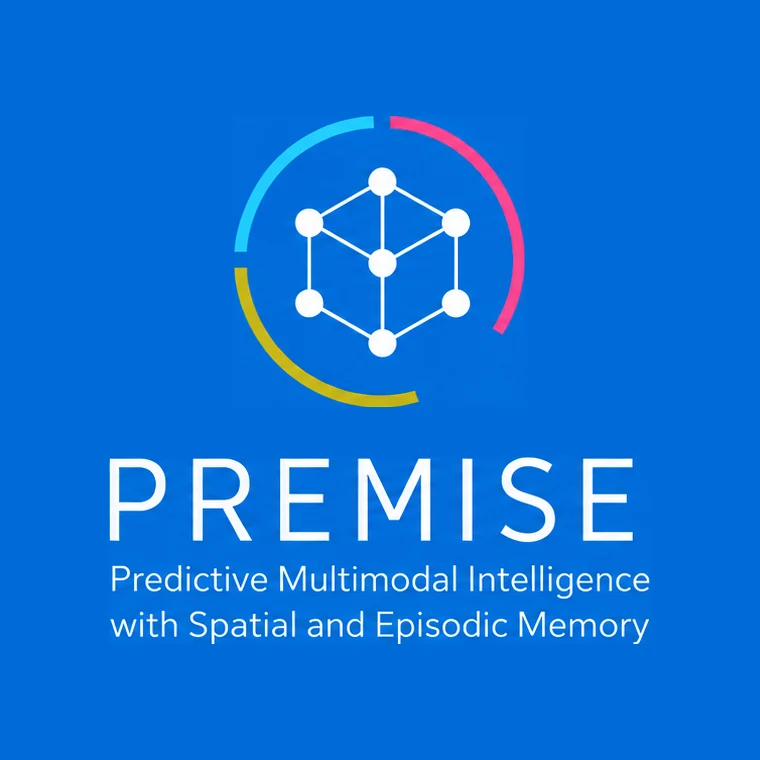
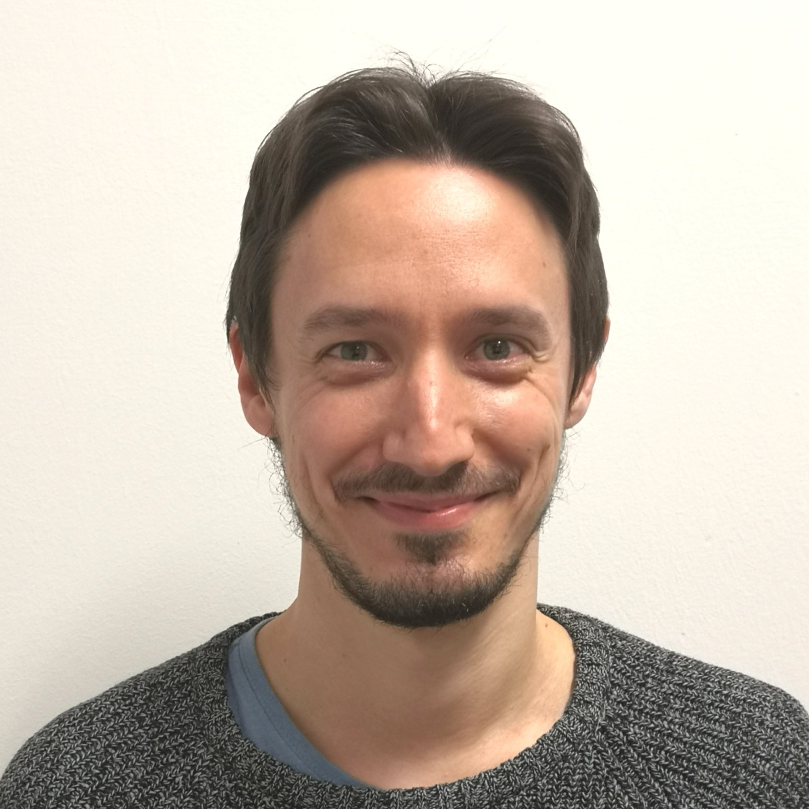
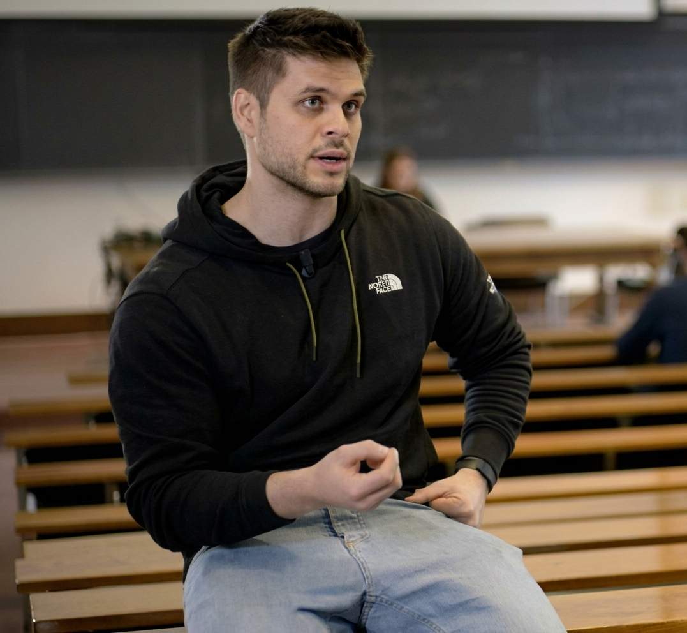

🎉 FundedPRIN 2026 · ranked 2nd in PE6 · under-40 line · about 6% of proposals funded · 2026 – 2029
PREMISE
Multimodal AI that remembers: agents that keep a spatial and episodic memory of what they perceive and use it to anticipate what comes next. The Bologna unit, led by Matteo Poggi as Co-PI, heads the work package on 3D scene memory and geometric grounding.

Matteo Poggi Co-PIAssociate Professor · head of the Bologna unit

Fabio TosiAssistant Professor · unit member
PI Lorenzo Baraldi (UNIMORE), with UniTrento, CNR, PoliMi and Bocconi